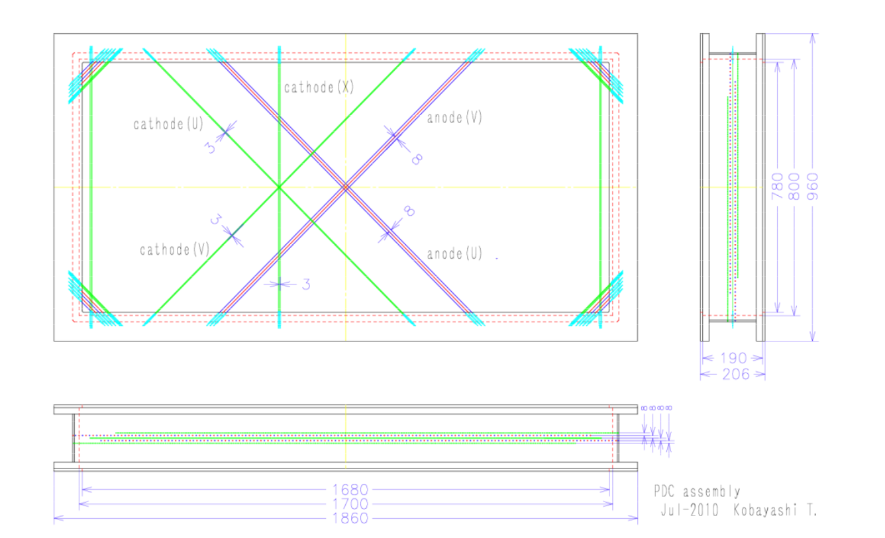
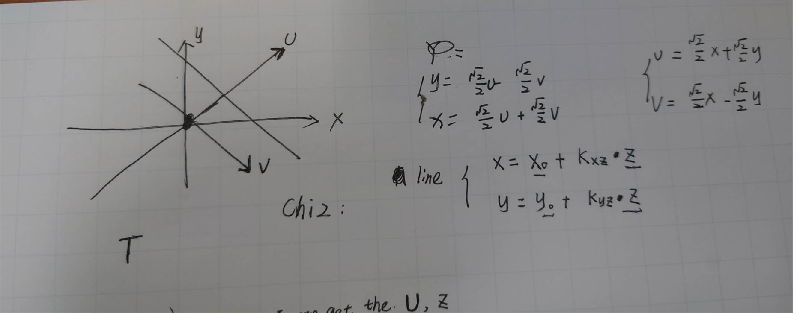

PDC 漂移室模拟方案#
参考资料与教学#
1. 漂移室原理#
2. Geant4 模拟#
3. PDC 探测器技术文档#
PDC 指标#
1. 设计与用途#
PDC探测器（质子漂移室）用于测量与束流速度相近（projectile-rapidity）的质子的动量，放置在SAMURAI磁铁下游。为减少探测器平面数量，PDC采用阴极读出法获取位置信息，阳极平面使用Walenta型漂移室，8毫米漂移长度设计减少阳极线数量。为探测多粒子事件，阴极线采用三种方向：0度、+45度和-45度。
注：PDC采用阴极读出（cathode readout）。当电离产生的电子向阳极丝漂移并引发雪崩时，会在附近的阴极条上产生感应电荷，通过读取这些感应电荷来确定粒子的位置。
2. 主要参数#
- 有效面积：1700mm × 800mm
- 阳极线：金-钨/铼合金，30μm直径，间距16mm，漂移长度8mm
- 阴极线：金-铝合金，80μm直径，间距3mm
- 阳极-阴极间隙：8mm
- 阴极条宽度：12mm（每4根阴极线合并成一个条）
- 供电：阳极线施加正高压，势线施加轻微负高压
- 配置：阴极(U)-阳极(V)-阴极(X)-阳极(U)-阴极(V)
- 运行气体：Ar+25% i-C4H10 或 Ar+50% C2H6

PDC结构示意图

PDC丝室结构。X, U, V 层通过不同方向的丝（或条）来确定粒子穿过的二维位置。例如，X 层的丝通常垂直于X轴，用于精确测量X坐标。
阳极丝线（读出丝）示意图：

代码在https://github.com/tianbaiting/Dpol_smsimulator/blob/main/sim_deuteron/forunderstanding/plot_pdc_wires.py
3. 读出方案与发展#
- 初始方案（已测试）：为减少读出通道，曾测试电荷分割读出法，将阴极条通过电阻串联，每8个条通过一个电荷灵敏前置放大器读出。原型探测器（600mm × 480mm）对X射线取得1mm（rms）位置分辨率，但无法正确处理两个质子事件。
- 新方案（开发中）：为解决多粒子问题并提高分辨率，开发新读出电路。每个阴极信号直接连接到前置放大器、整形器和采样保持电路，在前端板（FEB）数字化。预计位置分辨率提升约5倍，需约810个读出通道。
模拟方案概述#
需要自行构建 PDC 探测器。Geant4 能够精确模拟粒子与气体分子的电离过程。我们的替代方案如下：
- 用 Geant4 模拟粒子穿过漂移室气体。
- 在 Geant4 的用户动作类（SteppingAction）中，记录所有电离事件（能量沉积）的位置。
- 在每根丝附近构建 Sensitive Detector，将最近漂移距离作为时间，总沉积能量作为幅度。
- 该方法将“点火”简化为“附近发生了电离”，忽略了电子漂移时间、扩散和雪崩增益等复杂过程。
方法局限#
- 忽略电子漂移：实际电离产生的电子会沿电场线漂移，而不是简单地朝最近的丝线移动。在高电场区，电子会产生雪崩，这是“点火”过程。此方法无法模拟这一点。
- 无法模拟信号形状和时间：未考虑漂移时间，无法得到信号的精确时间信息和波形。
- 无法模拟增益：Geant4 本身不模拟雪崩过程，无法得到每个“点火”事件的信号增益。
1. 物理模型简述#
- 用 Geant4 构建 PDC 漂移室几何和气体材料。
- 粒子（如质子）穿过气体时产生电离，能量沉积被记录。
- 在 SteppingAction 中，判断电离事件是否靠近某根丝（anode wire），将最近距离作为漂移时间，能量沉积作为信号幅度。
- 忽略电子漂移过程、雪崩增益和信号波形，仅模拟空间分布和能量响应。
2. 几何与材料构建#
- 定义气体混合物：如 75% Ar + 25% i-C4H10，1 atm。
- 构建漂移室盒体：用 G4Box 或 G4Trap 表示气体体积。
- 构建丝阵列：用 G4Cylinder 或 G4Tubs 表示阳极丝，按实际位置排布。
3. 敏感体设置#
- 将气体体积设置为 Sensitive Detector（SD），在 SD 中记录每一步的能量沉积和位置。
4. SteppingAction 实现#
- 在 UserSteppingAction 中，判断每一步是否发生在气体体积内。
5. 数据输出#
- 每个事件输出所有“点火”信号（可用 TTree/TClonesArray），包括能量、位置、最近丝编号、漂移距离等。
具体code实现#
数据流向说明
根据模拟流程，数据的主要流向如下：
graph TD
subgraph "输入与模拟"
A[输入文件<br/>dbreakb01.root] --> B{Geant4 模拟};
C[BeamSimTree] --> D[beam数据];
end
subgraph "PDC 径迹探测器处理"
E(FragmentSD) --> F[FragSimData];
end
subgraph "中子探测器处理"
I(NEBULASD) --> J[NEBULAPla数据];
J --> K[中子探测分析];
end
subgraph "其他"
G{轨迹重建算法所需} --> H[输出分支<br/>target_*, PDC1*, PDC2*];
end
B --> E & I;/home/tbt/workspace/dpol/smsimulator5.5/sim_deuteron/src/DeutDetectorConstruction.cc
// 第232-234行：PDC1物理放置
G4ThreeVector pdc1_pos_lab{fPDC1Pos};
pdc1_pos_lab.rotateY(pdc_angle); // 坐标变换
G4Transform3D pdc1_trans{pdc1_rm, pdc1_pos_lab};
new G4PVPlacement{pdc1_trans, pdc_log, "PDC1", expHall_log, false, 0};
// 第236-240行：保存到模拟参数
frag_prm->fPDC1Position.SetXYZ(
fPDC1Pos.x()/mm,
fPDC1Pos.y()/mm,
fPDC1Pos.z()/mm
);
先移动，然后再旋转
PDC有3个独立的敏感层：
U层： /PDC_U - 倾斜丝线方向
X层： /PDC_X - 垂直丝线方向
V层： /PDC_V - 倾斜丝线方向
// 在DeutDetectorConstruction.cc中的设置
fPDCSD_U = new FragmentSD("/PDC_U"); // U层敏感探测器
fPDCSD_X = new FragmentSD("/PDC_X"); // X层敏感探测器
fPDCSD_V = new FragmentSD("/PDC_V"); // V层敏感探测器
// 绑定到对应的逻辑体积
fPDCConstruction->fLayerU->SetSensitiveDetector(fPDCSD_U);
fPDCConstruction->fLayerX->SetSensitiveDetector(fPDCSD_X);
fPDCConstruction->fLayerV->SetSensitiveDetector(fPDCSD_V);
FragmentSD工作原理
核心方法是 ProcessHits()：
G4bool FragmentSD::ProcessHits(G4Step* aStep, G4TouchableHistory*)
{
// 1. 获取数据管理器
SimDataManager *sman = SimDataManager::GetSimDataManager();
TClonesArray *SimDataArray = sman->FindSimDataArray("FragSimData");
// 2. 提取步进信息
G4StepPoint* preStepPoint = aStep->GetPreStepPoint();
G4StepPoint* postStepPoint = aStep->GetPostStepPoint();
// 3. 筛选条件：只记录主粒子且带电粒子
if(parentid == 0 && aStep->GetTrack()->GetDefinition()->GetPDGCharge() != 0.)
{
// 4. 创建TSimData对象并填入数据
TSimData* data = new TSimData();
data->fTrackID = trackid;
data->fDetectorName = detectorName; // "U", "X", "V"
data->fPrePosition = prePosition;
data->fPostPosition = postPosition;
data->fPreMomentum = preMomentum;
// ... 更多物理量
}
}
创建日期: 2025-08-25